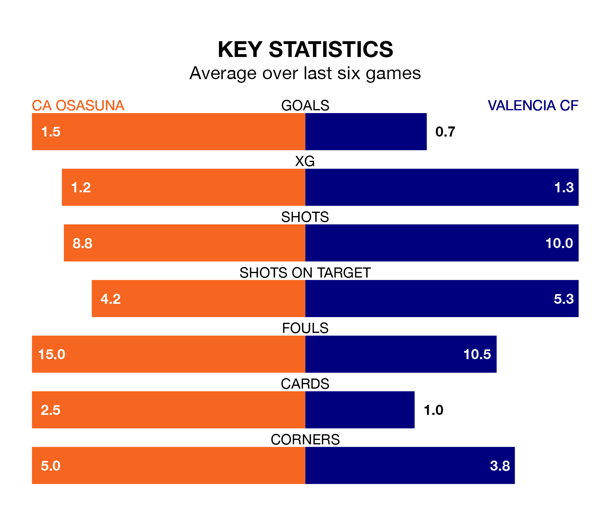

Valencia CF travel to CA Osasuna on late Monday in La Liga.
The visitors come into the game on the back of a win in their last match, having beaten Granada CF 1-0 away, with a goal from André Almeida.
Osasuna also won their last match, 3-0 against Almería, with their goals scored by José Arnáiz, Ante Budimir and Iker Muñoz.
In Budimir, Osasuna have the league's most on-form striker so far this season. He has notched 16 goals in 30 appearances.
His goal rate of one every 143 minutes is quicker than that of Hugo Duro, Valencia's top scorer with a goal every 210 minutes, and a total of 12 goals in 30 games.
In the last 10 years, Osasuna and Valencia have played each other on 12 occasions. Osasuna won four of them, Valencia five, and they drew three times.
On average, Osasuna scored 1.5 goals and Valencia 1.8 in those matches.
Their last meeting was on August 27, when Osasuna won 2-1 away.
With 33 goals in 30 games so far this season, the visitors are scoring at below the league average rate with 1.1 goals per game. But they are conceding fewer than average too, letting in 32 goals at a rate of 1.1 per game.
The home side are also below average scorers, with 1.2 goals per game, compared to a league average of 1.3. They have conceded 1.4 goals per game.
Valencia are seventh in the table after 30 games, of which they have won 12 and drawn eight, earning 44 points.
Osasuna are two places behind Valencia in ninth, with 11 wins and six draws putting them on 39 points.
Osasuna are in mixed form in La Liga, with three wins and a draw from their last six games.
With two wins and three draws over that period, the away team's form is slightly worse – they have taken nine points from 18, compared to the hosts' 10.
Updated: 14:47 (UTC), 09/04/24